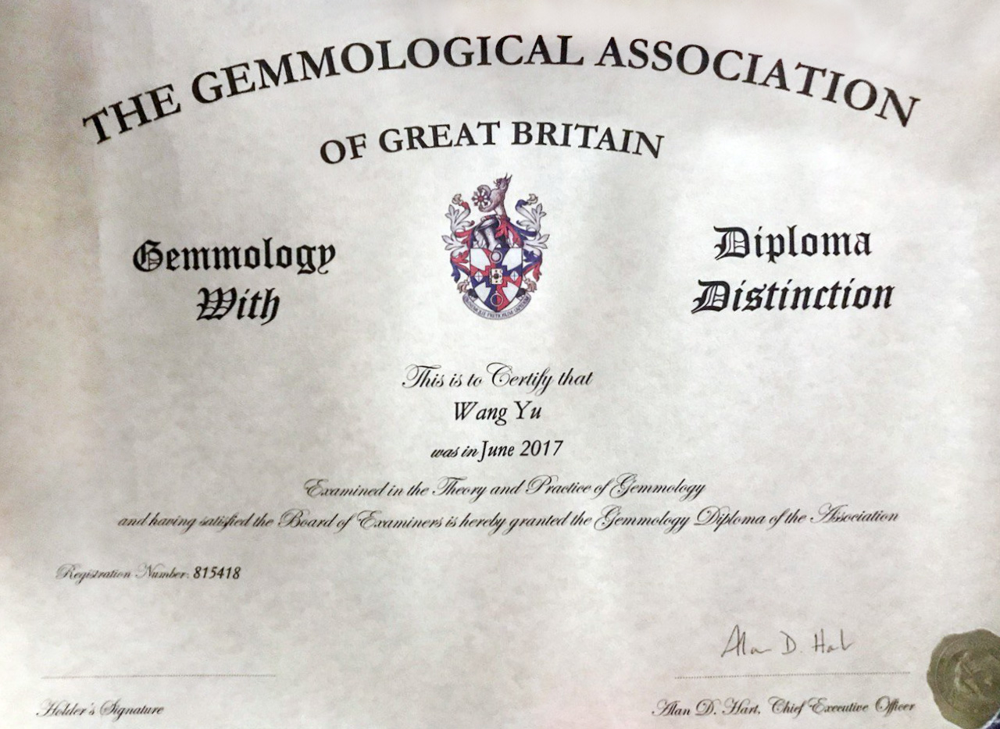
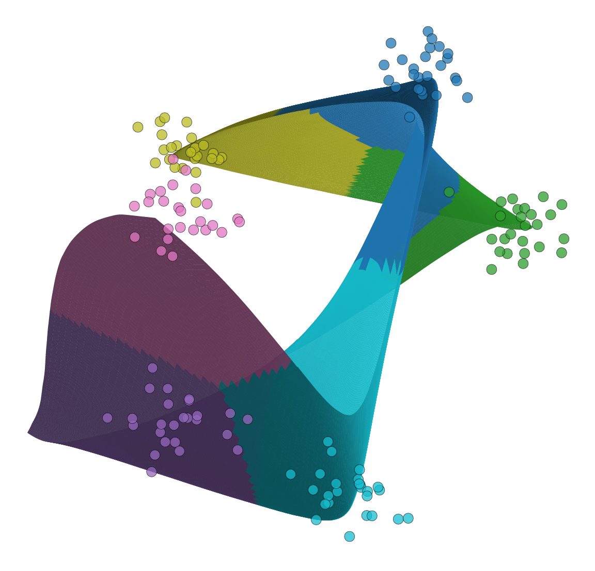
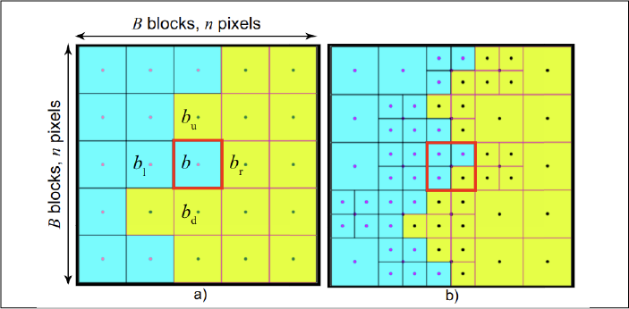

About Me
Hi there, I'm Yu Wang, just got my Ph.D. degree from Visualization and Graphics Group, Utrecht University, under the supervision of Prof. Alexandru Telea. My research interests include high-dimensional data visualization, adversarial training (GAN), and machine learning classifier visualization.
Alongside research, I now work as a software engineer and have been building practical AI tools around retrieval, interactive interfaces, and LLM-assisted workflows. More recently, I have been leaning toward agentic-AI-related product and engineering work.
Fun fact: I am an
FGA-certified gemologist

Research
Visual analytics for high-dimensional data and machine learning
I build methods and interfaces that make embeddings, inverse projections, and classifier behavior easier to inspect instead of treating them as black boxes.
Most of my work sits between dimensionality reduction, explainable AI, interactive systems, and practical AI tooling. The projects below mix publication-linked research software with side projects that reflect how I build user-facing systems.
Inverse projections
Decision maps
Interactive ML systems
Research software
Applied LLM tools
Selected Research and AI Projects
Repos that connect papers, prototypes, demos, and a few practical AI side projects.
Research software
LCIP (AKA how to make dogs smile)
Controllable inverse projection system for high-dimensional image data. LCIP adds a user-controlled latent direction so exploration is not limited to a single fixed reconstruction surface.
PyTorch
PySide6
StyleGAN2
Visual analytics

Python package
InverseProjections
Reusable toolkit for inverse projection workflows, collecting NNinv, iLAMP, RBF interpolation, multilateration-based inversion, and gradient-map analysis behind a consistent API.
pip install inverse-projections
Python
PyTorch
scikit-learn
Gradient maps

Decision-map research
Generalized FastDBM
Framework for computing dense explanation maps for classifiers over UMAP and t-SNE embeddings using inverse projection plus adaptive refinement, so expensive maps can be approximated far faster than exhaustive grid evaluation.
PyTorch
TensorFlow
Adaptive refinement
Decision boundary maps
Applied AI side project
RAG Thesis System
A chat interface for my PhD thesis, built after friends told me the PDF was too long and difficult to read. It combines retrieval, reranking, citation handling, memory, and a browser UI into a compact LLM application that also reflects my growing interest in agentic AI tooling.
FastAPI
ChromaDB
Hybrid retrieval
LLM app
Selected Publications
-
LCIP: Loss-Controlled Inverse Projection of High-Dimensional Image Data
Yu Wang, Frederik L. Dennig, Michael Behrisch, Alexandru Telea.
arXiv:2602.11141, 2026 -
Investigating Desirable Properties of Inverse Projections and Decision Maps
Yu Wang, Alexandru Telea.
Communications in Computer and Information Science, 2026 -
Inverting Multidimensional Scaling Projections Using Data Point Multilateration
Daniela Blumberg, Yu Wang, Alexandru Telea, Daniel A. Keim, Frederik L. Dennig.
EuroVis workshop on visual analytics (EuroVA), 2024 -
Computing fast and accurate decision boundary maps
Cristian Grosu, Yu Wang, Alexandru Telea.
EuroVis workshop on visual analytics (EuroVA), 2024 -
Interpreting mineral deposit genesis classification with decision maps: a case study using pyrite trace elements
Yu Wang, Kun-Feng Qiu, Alexandru C. Telea, Zhao-Liang Hou, Tong Zhou, Yi-Wei Cai, Zheng-Jiang Ding, Hao-Cheng Yu, Jun Deng.
American Mineralogist, 2024 -
Seeing is Learning in High Dimensions: The Synergy Between Dimensionality Reduction and Machine Learning
Alexandru Telea, Alister Machado, Yu Wang.
SN Computer Science, 2024 -
Fundamental Limitations of Inverse Projections and Decision Maps (best student paper award)
Yu Wang, Alexandru Telea.
Proc. IVAPP, 2024 -
Quantitative and Qualitative Comparison of Decision-Map Techniques for Explaining Classification Models
Yu Wang, Alister Machado, Alexandru Telea.
Algorithms, 2023 -
Machine Learning Prediction of Quartz Forming-Environments
Yu Wang, KunFeng Qiu, Axel Müller, ZhaoLiang Hou, ZhiHai Zhu, HaoCheng Yu.
Journal of Geophysical Research: Solid Earth, 2021